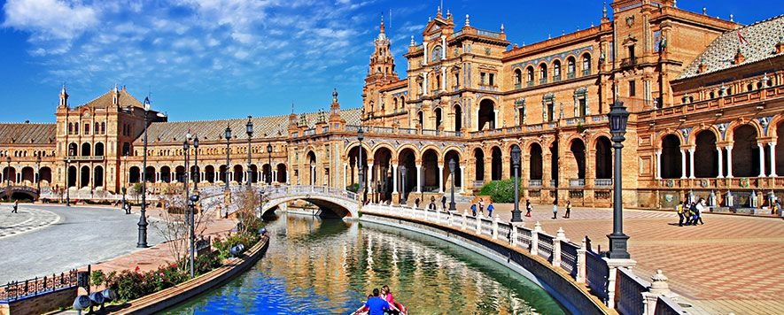
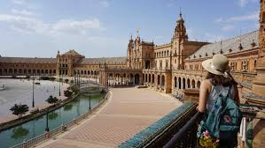
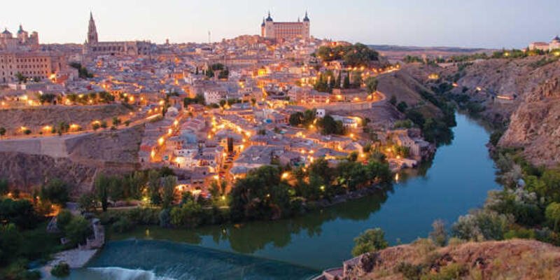
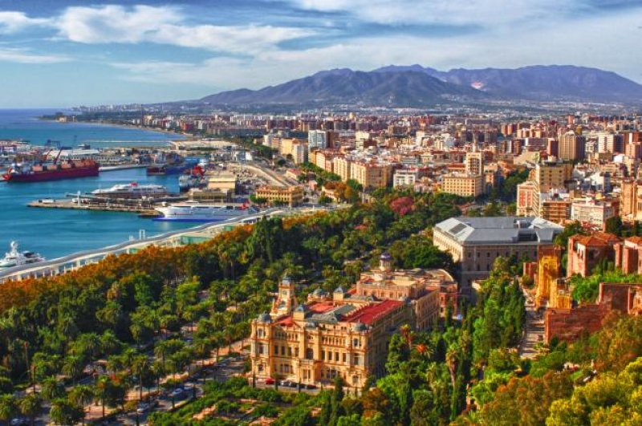
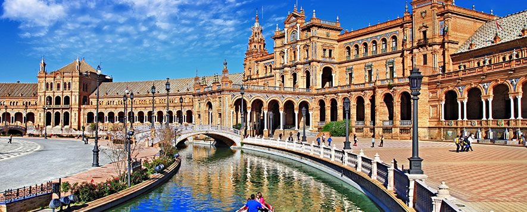
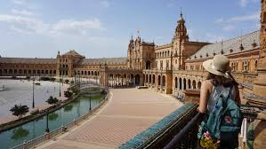
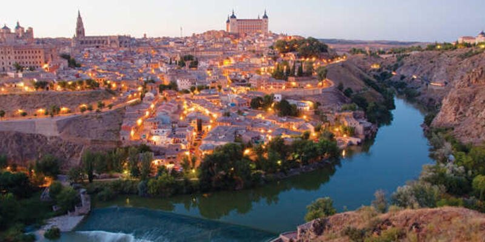
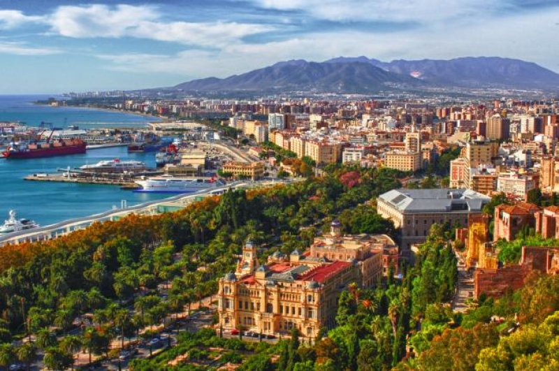

1-SPAIN:
 







Why should you go to Spain??
1.Because life’s a beach
Seriously. It’ll take you a long time before you visit every single beach in Spain, but they’re all worth it. Beautiful, scenic, and incredibly relaxing, the Spanish beaches are one of the many reasons why so many people choose Spain as their beloved destination. Just imagine living close to a beach and coming down whenever you fancy!
2. One with the nature
It’s not just the ocean that attracts people - Spain features some of the most beautiful landscapes and many Spaniards love taking advantage of a sunny day and decide to go for a hike.
3. The island life
If you’re not a fan of the mainland, you don’t even need to worry, because Spain claims seven larger islands and plenty of smaller ones where you can settle on and live the rest of your life as a true islander.
4. The food
Once you familiarise yourself with Spanish food, it’ll take a long time before you can consume anything else. From tapas and jamon to some of the most delicious (and ridiculously cheap) market food you have ever seen, Spain really does know how to feed you the right way.
5. Weird traditional festivals galore
We all know the Spanish people love to party but they’re especially good at doing it in a weird way. Want to stomp your bare feet on tomatoes? There’s a festival for that! Want to burn large paper mache statues? You can do that too! Want to celebrate a near-death experience by being carried in an open coffin? Sorted!
6. Magical rooftop bar experiences
Sure, you can enjoy a good rooftop bar view in plenty of other cities, but chances are, you’ll have to deal with terrible weather. Luckily, this is not a thing in Spain. Rooftop bars in cities like Madrid are absolutely perfect - not only do they almost always guarantee an amazingly sunny weather, they also feature some of the most beautiful views eve!
7. Streets with character
If photography’s your thing, Spain will be your paradise. This beautiful country doesn’t lack gorgeous streets with plenty of character as well as characters that live ther
8. Amazing historical buildings
Barcelona’s Sagrada Familia, Granada’s Alhambra, the Great Mosque of Cordoba, Madrid’s Prado Museum, and 5 San Lorenzo de El Escorial, are Spain’s most top-rated historical buildings and attractions. Along with holding some fascinating stories, they are also some of the most stunning sights you’ll ever visit!